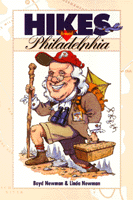

<body bgcolor="#FFFFFF" text="#000000" link="#0000FF" vlink="#CC0000" alink="#CC0000"><center><hr width="350" size="1" align="center" noshade>An invaluable guide to forty fascinating hikes within a short drive of Philadelphia<hr width="350" size="1" align="center" noshade><p><a href="https://cdcshoppingcart.uchicago.edu/Cart/ChicagoBook.aspx?ISBN=9781566395298&&PRESS=temple" target="_top">Buy this book!</a> | <a href="https://cdcshoppingcart.uchicago.edu/Cart/Cart.aspx?PRESS=temple" target="_top">View Cart</a> | <a href="https://cdcshoppingcart.uchicago.edu/Cart/Cart.aspx?PRESS=temple" target="_top">Check Out</a></p><p></p></center><!--none//--><h1>Hikes Around Philadelphia</h1>
<h3>Boyd Newman and Linda Newman</h3>
<P>cloth 1-56639-529-1 $49.95, <FONT COLOR=#990033>Out of Print</FONT>
<br>paper 1-56639-530-5 $22.95, Jan 00, <FONT COLOR=#990033>Available</FONT>
<br>Electronic Book 1-43990-776-5 $22.95 <FONT COLOR=#990033>Out of Print</FONT>
<BR> 224 pp
5.5x8.25
</P><p>Want to walk for a leisurely hour or two with the kids? Take them to the Churchville Nature Center, with its re-created Lenape Indian village and children's exhibits. Or would you prefer a more strenuous all-day hike? Try the rocky woods trail at Bake Oven Knob, Bear Rocks, and The Cliffs. Are your interests historical? Visit the more than fifty pre-Revolutionary dwellings at Skippack Creek. Or if you're interested in wildlife, hike Green Lane Reservoir, where 260 species of birds have been sighted. Perhaps you'd simply like to hike from Pennsylvania to Delaware and back again. Then White Clay Creek Preserve is for you.
<p>These are only five of the forty hiking trails described in <i>Hikes Around Philadelphia. </i>All are within an hour and a half's drive of the city. Ranging from 1.0 to 12.6 miles in length, they will take you through dense forests or wide-open meadows, past early farmsteads or a ringing boulder field from the last ice age. You can break your hike with a visit to a restored home or leave civilization behind on an isolated mountain ridge. Some of the trails are gravel or paved, or are canal towpaths, and are quite suitable for young children, older adults, or wheelchair hikers. Others are longer and more challenging, including rugged sections of the Appalachian Trail and the Horseshoe Trail.
<p>For each hike Boyd Newman and Linda Newman provide a detailed write-up, a trail map, and directions to the trailhead. They also include information on distance, elevation, probable hike time, surface, interesting features, facilities, disability access, whether hunting is allowed in the vicinity, and availability to public transportation. This format allows you to browse through the book and easily locate the particular hike that appeals to you today.
<p>In a concise introduction, the authors not only explain how to get the most out of the book but also give some hints on hiking safety and appropriate clothing and equipment.
<p>This handy reference offers:<br>
<ul><li><p>a detailed write-up of each hike
<li><p>easy-to-read trail maps
<li><p>directions to the trail heads
<li><p>information about nearby facilities
<li><p>hikes that are accessible by public transportation
<li><p>details about handicap accessibility
<li><p>lots of other pointers that make planned or last-minute hikes fun and easy for everyone</ul>
<BR>&nbsp;<h2>Excerpt</h2><P>Excerpt available at <a href="http://www.temple.edu/tempress">www.temple.edu/tempress</a></p>
<BR>&nbsp;<h2>Contents</h2><P>
<p>Locator Map
<br>Introduction
<br>Hikes
<br>1. Heinz Wildlife Refuge
<br>2. Scott Arboretum
<br>3. Springfield Trail
<br>4. Leiper-Smedley Trail
<br>5. Tyler Arboretum
<br>6. Ridley Creek
<br>7. Schuylkill Center for Environmental Education
<br>8. Andorra natural Area
<br>9. Wissahickon Gorge
<br>10. Lorimer Park
<br>11. Pennypack Wilderness
<br>12. Neshaminy Park
<br>13. Delhaas Woods and Silver Lake
<br>14. Churchville Nature Center
<br>15. Five-Mile Woods Preserve
<br>16. Tyler State Park
<br>17. Audubon Wildlife Sanctuary
<br>18. Skippack Creek
<br>19. Betzville Railroad Grade-Schuylkill River Trail
<br>20. Valley Forge
<br>21. Struble Trail
<br>22. White Clay Creek Preserve
<br>23. Nottingham Serpentine Barrens
<br>24. French Creek
<br>25. Hopewell Village and Baptism Creek
<br>26. Nolde Forest
<br>27. Daniel Boone Homestead
<br>28. Green Lane Reservoir
<br>29. Peace Valley
<br>30. Bowman’s Hill State Wildflower Preserve
<br>31. Tohickon Valley
<br>32. Lake Nockamixon
<br>33. Old Dry Road Farm
<br>34. Ringing Rocks
<br>35. Delaware Canal Towpath
<br>36. Jacobsburg Settlement
<br>37. Bake Oven Knob, Bear Rocks, and the Cliffs
<br>38. The Pinnacle and Pulpit Rock
<br>39. Blue Mountain and Phillips Canyon
<br>40. Sand Spring-Tom Lowe Trail
<br>Appendices
<br>A. Hikes by Length
<br>B. Hikes by Disability Access
<br>C. Hike Map Index
<br>D. Hikes Near Public Transportation
</P><BR>&nbsp;<H2>About the Author(s)</H2>
<P><B>Boyd Newman</B> is a systems engineer with Lockheed Martin Corporation.</P>
<P><B>Linda Newman </B>is a physical therapist with Keystone Care Therapies, Inc. Both are members of the Keystone Trails Association.</P>
<BR><H2>Subject Categories</H2>
<p><A HREF="/tempress/philly.html" TARGET="_top">Philadelphia Region</a>
<BR><A HREF="/tempress/sports.html" TARGET="_top">Sports</a>
<BR><A HREF="/tempress/nature.html" TARGET="_top">Nature and the Environment</a>
</p>
<p align="center"><a href="https://cdcshoppingcart.uchicago.edu/Cart/ChicagoBook.aspx?ISBN=9781566395298&&PRESS=temple" target="_top">Buy this book!</a> | <a href="https://cdcshoppingcart.uchicago.edu/Cart/Cart.aspx?PRESS=temple" target="_top">View Cart</a> | <a href="https://cdcshoppingcart.uchicago.edu/Cart/Cart.aspx?PRESS=temple" target="_top">Check Out</a></p><p><font face="Arial" size="1"><a href="copyright.html" onMouseOver="window.status='Web Copyright Policy';return true;" onMouseOut="window.status=''" title="Web Copyright Policy">&copy;</a> 2015 <a href="http://www.temple.edu" target="new" onMouseOver="window.status='Link to Temple University home page';return true;" onMouseOut="window.status=''" title="Link to Temple University home page">Temple University</a>. All Rights Reserved. http://www.temple.edu/tempress/titles/1321_reg.html</font></p>